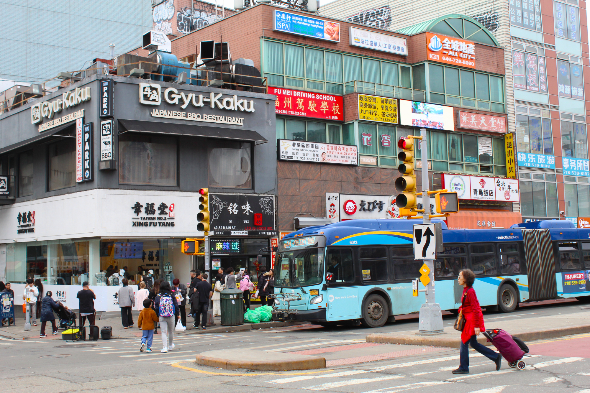

Emerging from the 7 train at Flushing Main Street, you’re immediately swept into the
bustle. Hawkers call out in Mandarin as children walk home from school. Trendy boba cafes nestle between
decades-old dumpling restaurants. Basement apartments housing ten people sit in the shadow of rising luxury
condos.
Soon, something new will transform the landscape: a casino.
Flushing, a vibrant hub of culture and diversity within Queens, is home to one of the
largest Chinatowns in the country. It’s also a hotspot for rapid change and gentrification: in the city’s
last decade, only Williamsburg saw more luxury condos built, with two-bedrooms frequently starting above $1
million.
Currently, 70% of residents are renters. Many pay over half their income in rent. One in 5 live below the poverty
line. They can only watch as the neighborhood changes before their eyes.


Enter Steve Cohen — a billionaire hedge fund manager and the owner of the Mets.
He’s also known for being at the heart of a 2016 insider-trading scandal (for which his company owed $1.8
billion in penalties).
Since September 2021, there have been reports of Cohen eyeing Queens for a new casino —
specifically, 50 acres of public park land next to the Mets’ Citi Field in Flushing-Corona Meadows Park.
The land has seen proposals for development before, but none have ever come to fruition. Cohen, however, was intent.
In 2023, he revealed plans for the $8-billionaire development "Metropolitan Park.” Partnering with Hard Rock,
the development promises not only a casino, but also a music venue, a food hall, a hotel, and a 20-acre park.

The plan was met with significant community backlash. Since its announcement, at least 18
community groups have banded together to publicly denounce the casino project for privatizing 78 acres of public land and
exploiting local communities.
30 faith leaders in Queens representing 10,000 local congregants released statements
against Metropolitan Park casino and the promotion of gambling.
Over 1000 people have rallied to protest the casino in Downtown Flushing.
In June 2021, Eric Adams had just won the democratic mayoral primary. Steve Cohen had donated $1.5 million to
his campaign. It was only fitting that two months into his term, the Adams’ administration began engaging with
Cohen’s casino project.
Adams isn’t the only politician to receive Cohen’s generosity.
According to city records, Cohen’s development
organizations New Green Willets and Queens Future spent a staggering average of $1.2 million on lobbyists each year since 2022.
Other politicians he and Hard Rock have donated money to
include Governor Kathy Hochul, Assemblymember Larinda Hooks, Queens Borough President Donovan Richards, and City
Council Member Francisco Moya — all of whom later came out to publicly support the casino.

One of the casino’s earliest opponents was Flushing’s own State Senator John Liu. In March 2024, Senator Liu
penned a biting op-ed in the New York Daily News arguing that casinos were predatory to Asian Americans.
A meeting with Cohen quickly changed his tune: in exchange for the Metropolitan Park’s addition of a Highline-like
bridge linking Downtown Flushing to Willets Point (or $100 million to the Flushing Waterfront Alliance if the
bridge doesn’t pan out), the senator would draft the bill allowing Cohen access to the park land himself.
Senator Liu’s original concerns about the casino weren’t unfounded, however.
Indeed, Cohen’s interest in the casino’s proximity to Chinese communities
was key to the plan, a hedge fund analyst alluded to in an interview with THE CITY. “The
success of the Macau business proves the Chinese population loves gambling,” he stated, noting that the Chinese
city’s gaming revenue had exceeded that of Las Vegas just before 2020.
“The parking lot’s proximity to the Chinese
population in Flushing will make their trip to the casino much shorter than, say, traveling all the way to New
Jersey.”
State Senator Jessica Ramos, who represents the west Queens side of the parkland, stated in an interview
with THE CITY that it had been hard to find people supportive of the casino plan who hadn’t “received or
been promised a check” by Cohen in exchange for support.
Upon polling the residents in her district, she found that 61% did not want to see a casino in Queens,
and 75% did not want one in their neighborhood.
A 2024 community exit poll, conducted in 2024 by the MinKwon Center and the AALDEF, showed that 68.8% of Flushing Asian Americans voters opposed the casino, citing “gambling addiction,” “public safety,” “and congestion” as their top concerns.
In a 2025 localized survey of Flushing voters, the Minkwon Center found that 83.5% of Asian American residents in the area had been excluded from the official public feedback process for the Metropolitan Park casino proposal.

Despite ardent community protest, Cohen’s Metropolitan Park vision will soon come to life. Last
December, both the New York State Gaming Facility Location Board and the New York Gaming Commission
voted unanimously to grant the casino licensure, along with two others in the Bronx and Queens. Both times,
the crowd erupted in protests.
In an interview with Spectrum News, Vicki Been, chair of the Gaming Facility Location Board was asked why
casino proposals were approved for Queens and the Bronx rather than Manhattan. She replied, “The community
advisory committees were charged with trying to figure out what do the communities want, and they said pretty
decisively that communities in Manhattan do not want a casino.”